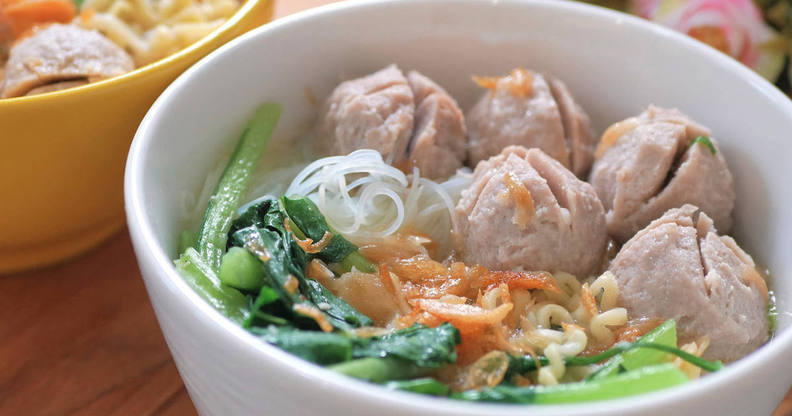

Bakso

Descriptions :
Bakso is Indonesian meatball, and is an extremely popular Indonesian food. It’s everywhere; you’re just as likely to find it being sold by street vendors (called kaki lima). Bakso are pretty easy to make, you only need a few ingredients to make the actual balls. Then, you just drop them in boiling water or stock to cook them, which only takes a couple of minutes or so.
Ingredients :
For the bakso
- 1 Kg of minced beef
- 200 - 300g chicken breast
- 300gr corn flour
- 7 cloves of minced garlic (fried-optional)
- ½ tsp pepper
- 1 tsp salt
- 200ml of water
- 5 eggs
- ½ tsp baking powder
- 1 tsp. fried onion
For the broth
- 3 liter of homemade beef stock
- 5 garlic clove, smashed
- 1 stalk celery
- 1 spring onion, chopped
- 1 tsp sugar
- 1 tsp pepper
- Pinch of salt
- ½ tsp. ginger
- 1 tsp beef stock powder
Best to serve with
- Egg noodles or rice noodles
- Tofu
- Lime juice
- Pok choy
- Chopped celery leaf
- Chopped fried onion
- Chopped fried shallot
- Sweet soy sauce
- Tomato sauce
- Chili sambal sauce
Instructions :
Bakso
- Mince the beef, garlic, fried onion, egg, salt and pepper then put them in a food processor. Blitz until pale pink.
- it has to be smooth, like a very thick paste.
- Transfer minced ingredients to a bowl.
- Do the same with chicken breast. Roughly cut the chicken breast, put in a food processor and blitz until nice and smooth.
- Put in the same bowl with the beef.
- Add in flour and water. Mix well.
- Boil water in a pot and add a pinch of salt.
- Make balls with your hand and add the meatballs one by one to the boiling pot. Use spoons to scoop and shape them. When they start floating, that’s when the meatballs are cooked.
Broth
- Place all the broth ingredients in a soup pot and bring to boil.
- Add the meatballs.